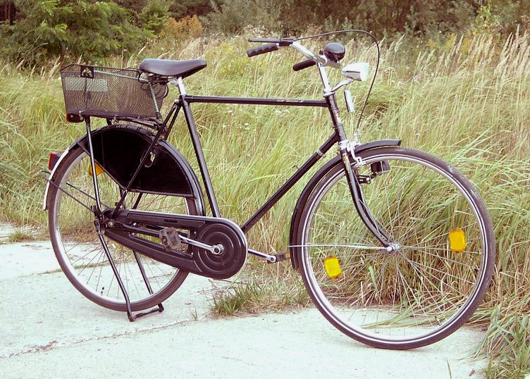
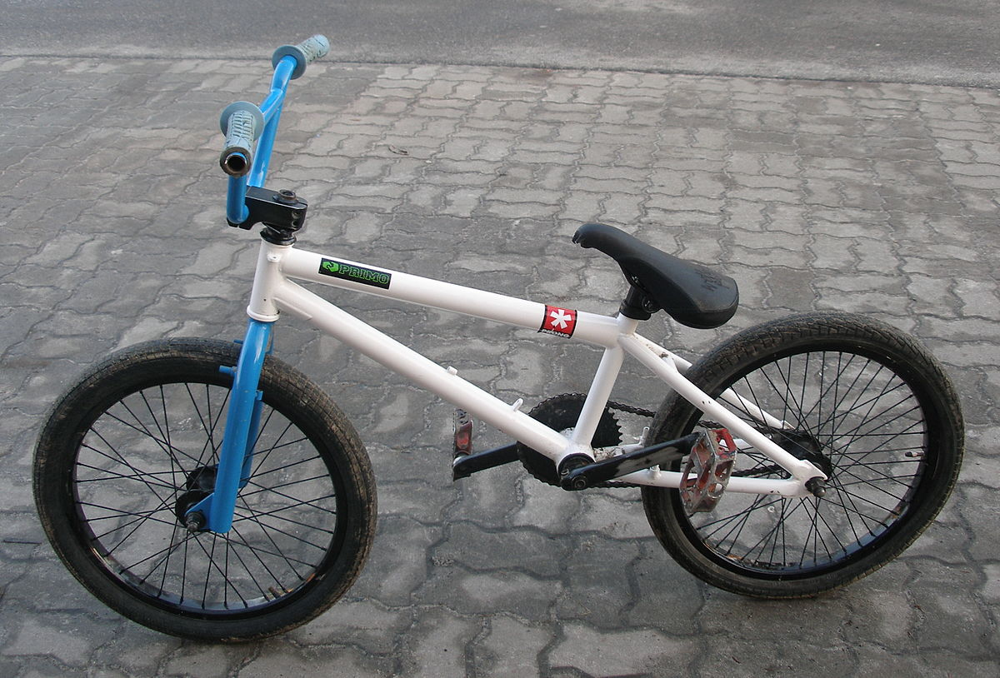

ROWER
Pojazd napędzany siłą ludzkich mięśni
Definicja roweru
Rower – jedno- lub wielośladowy pojazd drogowy napędzany siłą mięśni poruszających się nim osób za pomocą przekładni mechanicznej, wprawianej w ruch (najczęściej) nogami.Rodzaje rowerów
Rower Miejski Rower miejski – rower przeznaczony do jazdy w mieście. Tradycyjny rower miejski, tak zwany holender, zbudowany jest najczęściej na kołach 28-calowych (choć spotyka się również rowery z kołami 26- i 27-calowymi), posiada giętą, szeroką kierownicę, krótką ramę i szerokie siodełko umożliwiające jazdę w pozycji wyprostowanej. Posiada on też zwykle lampki zasilane z dynama, komplet błotników, osłonę na łańcuch, nóżkę, bagażnik tylny, czasem osłonę tylnego koła czy koszyk.
Rower Górski

Rowery górskie (ang. MTB, Mountain Terrain Bike) – nazwa rowerów, których przeznaczeniem jest jazda w terenie trudniejszym, niż pozwalają na to rowery szosowe czy trekingowe, np. górskie ścieżki, szlaki leśne, specjalne tory przeszkód. W porównaniu do rowerów szosowych oraz trekkingowych, rowery MTB są cięższe, ze względu na mającą gwarantować większą wytrzymałość konstrukcję. Rowery górskie, celem poprawy przyczepności i możliwości pokonania szybko i bezpiecznie wymagającego terenu (rock gardeny, rampy) w rowerach profesjonalnych oraz komfortu jazdy w rowerach amatorskich i turystycznych, bardzo często wyposaża się w różnego rodzaju amortyzatory, które również mają istotny wpływ na masę pojazdu.
Rower typu BMX 
BMX (ang. bicycle motocross) – nazwa roweru i rodzaju kolarstwa, które zostało zapoczątkowane w USA w latach 70. XX wieku. Sport ten uprawia się na torach ziemnych ze sztucznie przygotowanymi przeszkodami, z użyciem rowerów na kołach 20-calowych lub 24-calowych (cruiser), posiadających wzmocnioną i bardzo uproszczoną (bez przerzutek) konstrukcję. Poza tym BMX-y mogą mieć dowolny typ konstrukcji, masę i geometrię. Istnieją również mistrzostwa świata i puchar świata BMX (UCI BMX Supercross).